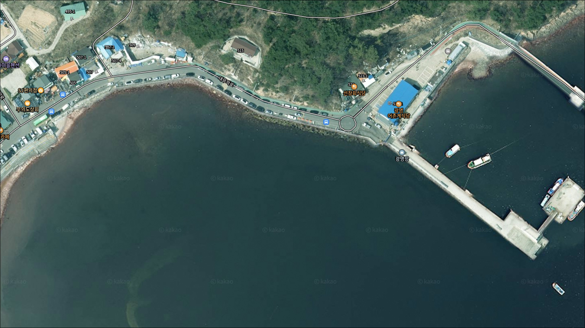
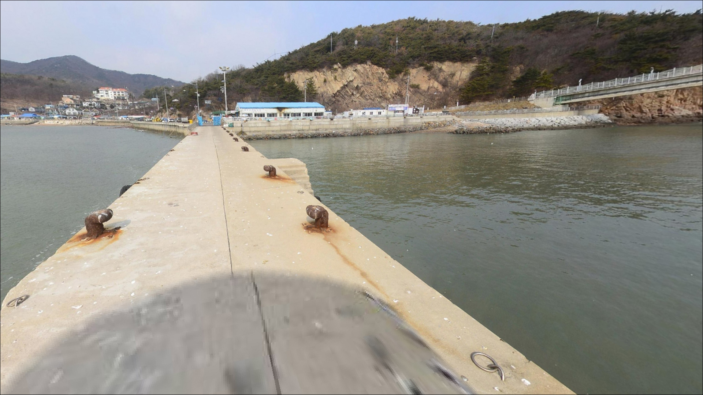
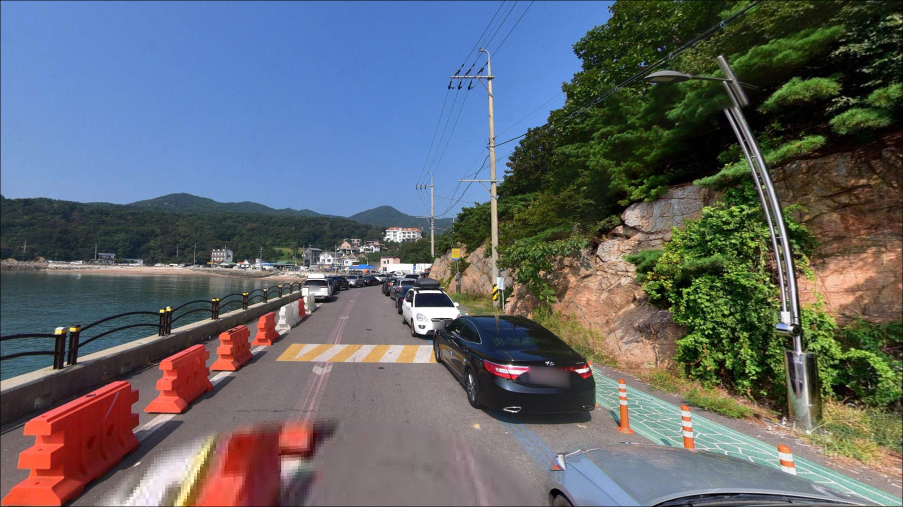
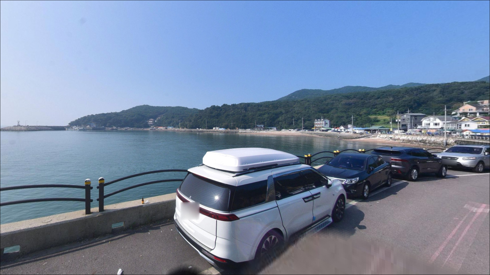
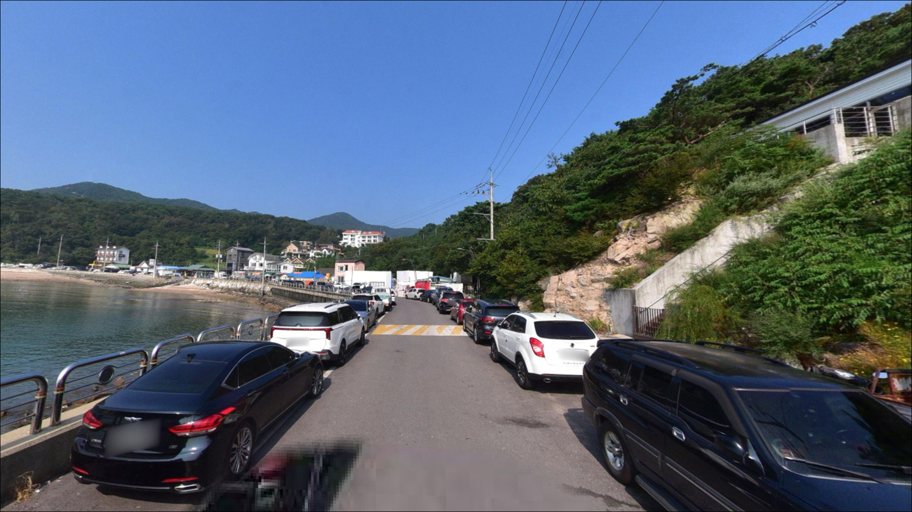
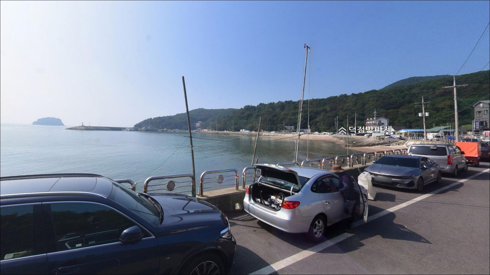
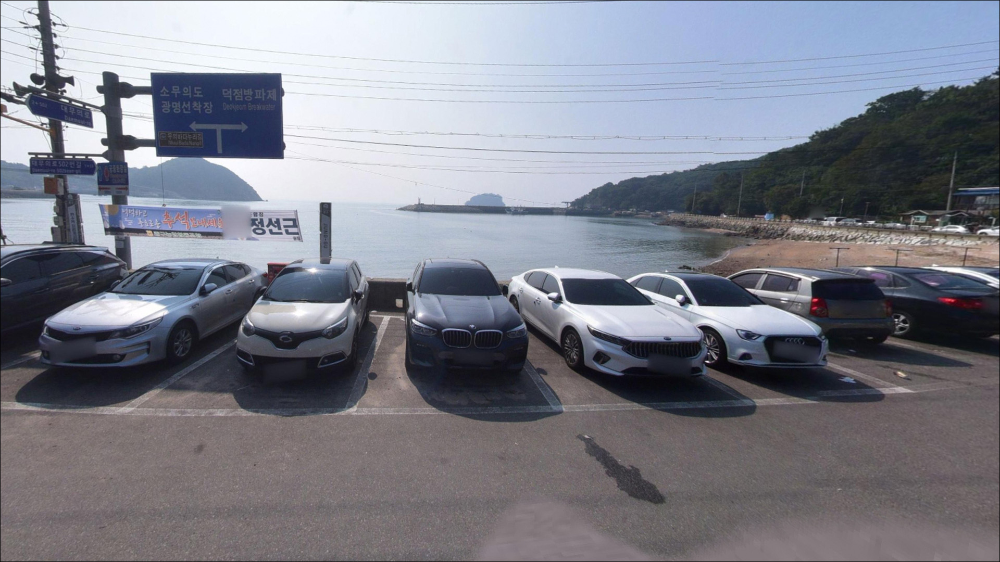
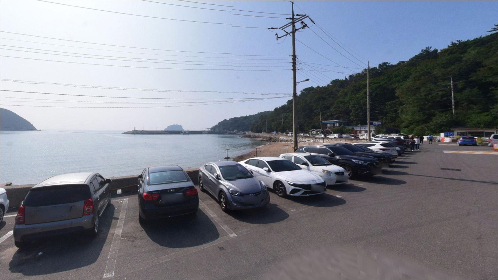
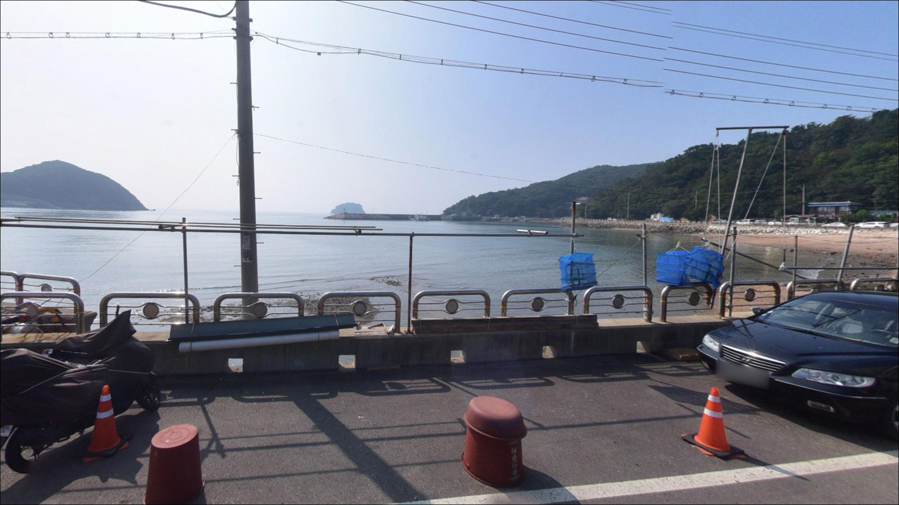

광명항, 무의도 인천 중구 한적한 분위기 속 차박, 낚시를 함께 하기 좋은 곳
이 페이지에는 광고(제휴 링크 포함)가 있으며, 광고 링크를 통해 구매하면 운영자가 판매 수익 또는 수수료를 받을 수 있습니다. 포인트 사진: 카카오맵 스카이뷰·로드뷰. 이 페이지의 지도·사진 이미지는 카카오맵의 실제 서비스 이미지와 다를 수 있습니다.


포인트 안내
광명항
인천광역시 중구 무의동 9-15
광명항 낚시에서 가장 자주 발생하는 실수는
물때를 확인하지 않고 낙조 시간대에 자리를 잡는 것입니다.
소무의도 수로 구간의 낙조류는 최대 3.0kn까지 오르는 편이라
봉돌을 무겁게 올려도 채비가 흘러버리는 상황이 됩니다.
물때 하나가 이 포인트의 조과를 결정하는 변수입니다.
인천광역시 중구 무의도 남단에 위치한 광명항은
1972년 지방어항으로 지정된 공식 어항입니다.
소무의도 인도교 바로 앞에 자리해
방파제·선착장·갯바위가 한 권역에 모여 있으며,
서울·수도권에서 당일 출조가 가능한
서해 근교 낚시 포인트입니다.
이 글은 광명항의
진입 여건, 물때 기반 낚시 조건,
지형 분석, 차박 체류 여건에 집중합니다.
조황 단정이나 특정 어종 보장은
이 글의 범위에 포함되지 않습니다.

1. 진입 동선과 포인트 접근성
영종대교 → 공항고속도로 → 신불IC → 잠진-무의 연도교 경유가
광명항의 기본 진입 경로입니다.
연도교 개통 이후 차량 접근 자체는
예전보다 수월해진 편이며,
무의도 내부 대무의로를 따라
포장도로로 항구까지 연결됩니다.
무의도 내부 도로는 대체로 교행 가능한 수준이나
광명항 인근 대무의로 끝자락은
폭이 좁아지는 구간이 포함되어 있습니다.
대형 SUV나 캠핑 장비를 실은 차량이라면
출발 전 위성지도로 진입 동선을
먼저 확인하는 것이 안전합니다.
주차는 항구 앞 노상 주차장과
인근 공영주차장을 활용하는 방식이 기본입니다.
주말·성수기에는 관광객 차량과 낚시객 차량이 동시에 몰려
조기 입장이 주차 성패를 가르는 구조입니다.
관광지 성격이 강한 항구에서는
조기 입장이 주차와 낚시 자리 모두를 결정하는 조건이 됩니다.

2. 차박 환경과 야간 체류 여건
광명항은 소무의도 바다누리길의 관광 기점 항구입니다.
낮 시간대에는 유동 인구가 많지만
야간에는 관광객이 빠지고
낚시객 위주의 분위기로 바뀌는 편입니다.
항구 주변으로 가로등이 배치된 구간이 있어
기본적인 야간 시야 확보는 가능해 보이나,
방파제 끝단으로 갈수록 조명이 줄어드는 구간이 있습니다.
노상 주차장 형태라 야간 장박 형태의 차박은
여건이 넉넉하지 않을 수 있습니다.
소무의도 수로 방향으로 열린 구조상
바람 영향을 받는 날은
바람 방향을 미리 확인하고
주차 위치를 정하는 것이 야간 체류의 기본입니다.
무의도는 관광지 규정이 적용되는 구역이 있습니다.
야영·취사 금지 안내가 붙어 있는 경우
이를 우선으로 따라야 하며,
현장 도착 후 안내판을
반드시 먼저 확인하는 것이 기본입니다.


3. 주변 편의시설 및 인프라 현황
항구 입구 방향에 편의점이 있어
간단한 식료품과 낚시 소품 보충이 가능합니다.
공영주차장 인근에는 공중화장실이 있습니다.
무의도 내에는 식당이 여럿 있어
식사 인프라 자체는 갖춰진 편이지만,
성수기 기준 가격대가 높은 편입니다.
영종도 방향으로 10km 이내를 이동하면
24시간 편의점과 약국을 이용할 수 있는 구간이 있습니다.
얼음·연료·여분 채비·비상약품 등
소모품은 출발 전 완비하고 오는 편이
현장에서의 번거로움을 줄여줍니다.

4. 방문 전 챙겨야 할 준비사항
광명항 방문 전 가장 먼저 확인할 것은 물때입니다.
바다타임에서 무의도 기준 물때를 확인하고
낙조 피크 시간대를 피하거나,
창조류 초반이나 조금 전후를 노려
출발 시각을 맞추는 것이 기본 전략입니다.
서해 낙조류는 피크 시간대에 유속이 급격히 올라가는 특성이 있습니다.
원투낚시 기준으로는
봉돌을 평소보다 무겁게 준비해 가는 편이 좋으며,
여분 채비는 넉넉히 챙기는 것이
갯바위·테트라포트 구간의 밑걸림 손실에 대비하는 방법입니다.
방파제·갯바위 구간은 이끼와 물기로
미끄러운 곳이 있습니다.
구명조끼와 야간 헤드랜턴은 기본으로 챙기고,
어선 이동 동선을 먼저 파악한 뒤
어구와 접촉하지 않는 자리를 먼저 잡는 것이
지방어항에서의 기본 매너입니다.

5. 낙조류가 강할 때도 낚시 자리를 유지할 수 있는 조건
광명항 주변에는 방파제·갯바위·선착장·자갈밭 등
다양한 지형이 1km 이내에 밀집해 있습니다.
바다타임 기준으로 광명방파제 갯바위 안롱 구간은
저질이 펄·모래 계열에 수심이 얕은 편으로,
원투낚시로 바닥층을 탐색하기에
밑걸림 부담이 상대적으로 적은 구간입니다.
방파제 끝단과 수로 입구 쪽은
소무의도 수로를 통과하는 조류가 집중되는 지점입니다.
낙조 시작 직전 타이밍이 자리 선정의 핵심이며,
낙조 피크 시간대에는 봉돌 무게를 올리거나
정조 타이밍을 기다리는 방식이
이 포인트를 효율적으로 운용하는 방법입니다.
내항 쪽은 외항에 비해 조류가 완만한 편이라
찌낚시나 생활낚시 스타일에 여건이 더 맞습니다.
정박 선박 주변 구조물은
조류가 약할 때 찌를 흘리기에
적합한 구간이 될 수 있습니다.
최신 조황은 출발 전 "광명항 조황",
"무의도 방파제 낚시" 키워드로
꼭 검색해 보시기 바랍니다.


6. 지형에 어울리는 낚시 스타일
원투낚시가 이 포인트 지형 조건에 가장 잘 맞는 스타일입니다.
갯바위 안롱 구간의 펄·모래 저질은
붕장어와 노래미를 노리는 바닥 탐색에 유리한 편이며,
창조류 초반 조금 전후를 맞추면
채비가 바닥에 안정적으로 머무는 상황이 만들어집니다.
루어낚시는 방파제 끝단과 테트라포트 구간에서
우럭·노래미를 기대해 볼 수 있는 스타일입니다.
수로 방향으로 조류가 살아있는 구간에서는
삼치 루어 가능성도 있습니다.
봄부터 가을까지 시즌 폭이 넓은 편이라
루어 스타일로 꾸준히 방문하기에 나쁘지 않은 포인트입니다.
주꾸미와 갑오징어는 봄·가을 시즌에
선착장 주변과 수로 입구 쪽에서 기대해 볼 수 있는 어종입니다.
에깅 채비나 바닥 채비 방식 모두
지형상 시도해볼 수 있는 여건이며,
찌낚시는 내항 쪽 완만한 조류 구간에서
조류를 태워 흘리는 방식이 어울립니다.
조류가 약해지는 정조 전후를 기점으로
원투와 찌낚시를 병행하는 방식이
이 포인트에서 자리를 효율적으로 운용하는 방법입니다.

7. 대안 포인트와 플랜 B 동선
광명항 주차 여건이 여의치 않거나
낚시 자리 확보가 어려울 때는
덕점방파제가 첫 번째 대안입니다.
무의도 내 차로 10분 내외 거리에 위치하며,
원투와 루어 모두 가능한 방파제 구조로
광명항보다 혼잡도가 낮은 편이라는 후기가 있습니다.
광명항에서 소무의도 인도교를 건너면
소무의도 갯바위 구간에 접근할 수 있습니다.
차량 진입은 불가하지만 도보로 이동 가능하며,
보다 본격적인 갯바위 낚시를 원할 때
대안 공략 구간으로 활용할 수 있습니다.
다만 조류가 강한 수로 접안 구간은
진입 안전에 각별히 주의해야 합니다.
영종도 을왕리 방향(10km 내외)으로는
을왕리 갯바위와 을왕리 선착장이 있습니다.
광명항 여건이 전혀 맞지 않는 날에
이 권역으로 동선을 전환하는 것도
현실적인 플랜 B가 됩니다.

물때와 입장 타이밍을 맞추면
광명항이 달라 보입니다
원투낚시와 루어낚시를 즐기는 낚시인이라면
광명항의 지형 조건은 잘 맞는 구조입니다.
방파제·갯바위·선착장이 한 권역에 밀집해
복합 공략이 가능하고,
수도권에서 당일 출조가 가능한 거리라는 점도
이 포인트를 찾는 이유 중 하나입니다.
반면 물때를 확인하지 않고
낙조 피크에 진입하거나,
주말 성수기에 늦게 도착하면
주차도 낚시 자리도 여의치 않은 상황이 됩니다.
물때 확인, 조기 입장, 봉돌 여분 준비,
이 세 가지를 갖추고 간다면
수도권 서해 근교 포인트로서
충분히 기억에 남는 출조가 될 수 있습니다.
관광지 항구 특성상 야간 체류 조건을 미리 확인하고
조류가 살아있는 새벽 창조류 타이밍에
낚시를 시작하는 계획을 세운다면,
낚시와 차박을 함께 챙기기에
나쁘지 않은 무의도 항구 포인트입니다.